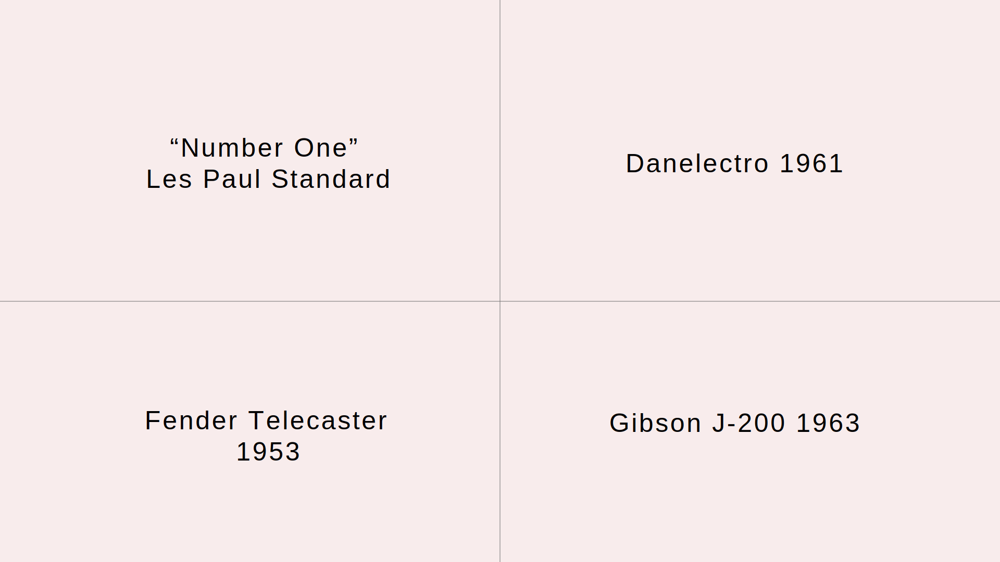
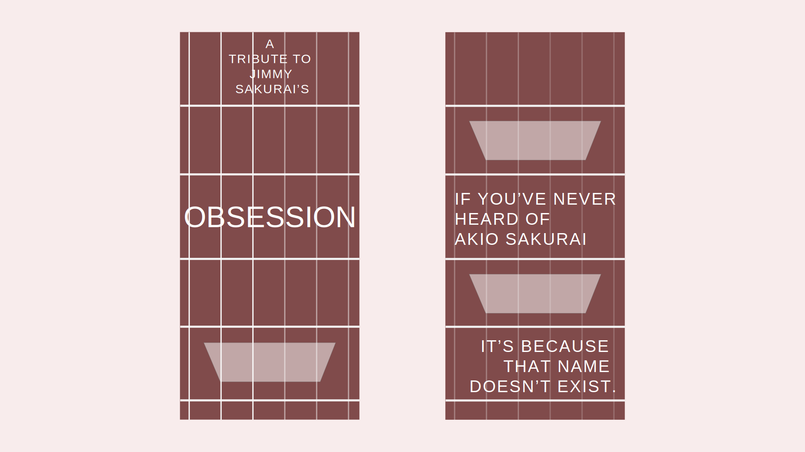
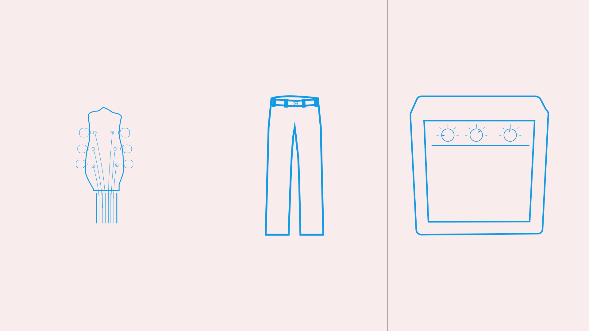
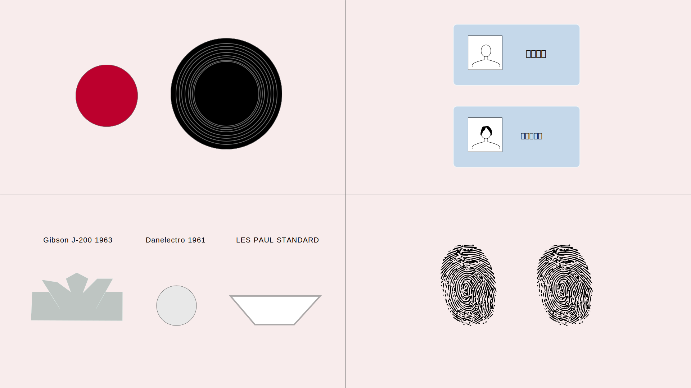
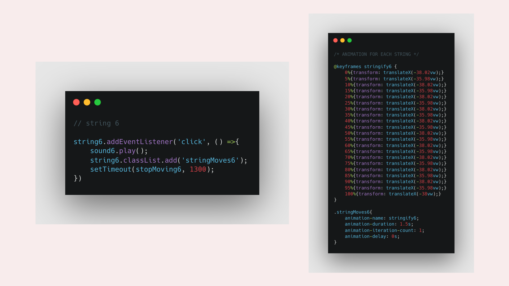

JIMMY SAKURAI
In 2019, I watched a movie that blew my mind.
It was about a japanese guy called Akio Sakurai,
who became obsessed with the legendary guitar player from Led Zeppelin, Jimmy Page.
I don't mean he-bought-all-the-vinyls obsessed, oh no.
We're talking about someone who started dressing up like him.
The resemblance was so powerful, that he became known as Mr Jimmy.
During this project, I had a sudden realization:
I too, became obsessed. With him.
RESEARCH
I wanted to tell his story as an experience, which is why I decided to build a website that not only looked like a guitar, but that could also be played like one. But what kind of guitar?
I started by searching Jimmy Page's most famous guitars and selected 4 of them.
DESIGN
I built wireframes and wrote the story to see how it would look like.
I designed illustrations that could help me tell and divide the story.
 CODE
While the website was made with CSS and JavaScript, the transitions between sections were made with the Aos Scroll Library.
The final touch was to animate the strings so the user could actually play them like a guitar.
Try the final product here.